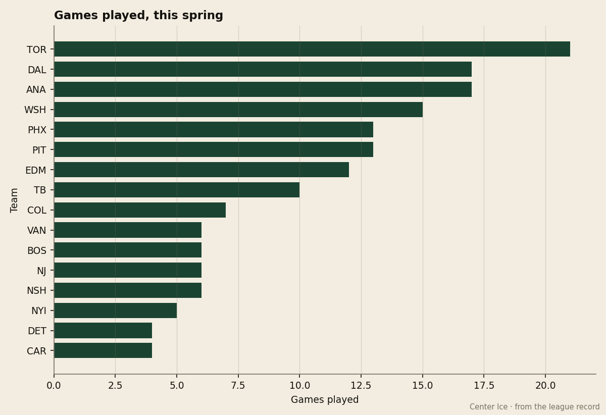

The Bracket, May 23: Dallas levels the Cup at 1, and Toronto plays on without the 98
Game 2 went to the Stars 2-1 on 2005-05-22; Game 3 is 2005-05-24 in Toronto, where Marian Gaborik is out until 2005-06-02 with an ankle
 Howard BlaineSenior writer, The Blaine Rankings · The Hockey Gazette
Howard BlaineSenior writer, The Blaine Rankings · The Hockey Gazette
Dallas evened the Stanley Cup Final at 1 on 2005-05-22, taking Game 2 2-1 in its own building. Game 3 goes to Toronto on 2005-05-24.

Both games so far were played in  Dallas Stars's building.
Dallas Stars's building.  Toronto Maple Leafs won the first 2-0 on 2005-05-20; Dallas answered with 2-1 two nights later. The schedule puts the next two in Toronto on 2005-05-24 and 2005-05-26, returns the Final to Dallas on 2005-05-28, and lists 2005-05-30 back in Toronto. This is the league's only live series; the other fourteen are done.
Toronto Maple Leafs won the first 2-0 on 2005-05-20; Dallas answered with 2-1 two nights later. The schedule puts the next two in Toronto on 2005-05-24 and 2005-05-26, returns the Final to Dallas on 2005-05-28, and lists 2005-05-30 back in Toronto. This is the league's only live series; the other fourteen are done.
Toronto reaches Game 3 without its best-paid skater
 Marian Gaborik99 of Toronto Maple Leafs is out until 2005-06-02 with an ankle, the league's designation, the onset sometime between 2005-04-26 and 2005-04-28. His return date falls past the last game on the calendar, so as scheduled he will not play in this Final again. He appeared in 8 of Toronto's 21 postseason games and scored 4 goals and 6 assists in them; the last of those 8 came during the Pittsburgh series, which ran 2005-04-22 to 2005-05-04. At 23, he is the 3rd pick of the 2000 draft and the first in Minnesota's expansion history. He scored 99 points at 55 goals this season on 20.5 minutes a night, and the Book holds him at 98 overall, his base of 91 plus 6 on the Development Index. He is on $1.10M with 1 year left.
Marian Gaborik99 of Toronto Maple Leafs is out until 2005-06-02 with an ankle, the league's designation, the onset sometime between 2005-04-26 and 2005-04-28. His return date falls past the last game on the calendar, so as scheduled he will not play in this Final again. He appeared in 8 of Toronto's 21 postseason games and scored 4 goals and 6 assists in them; the last of those 8 came during the Pittsburgh series, which ran 2005-04-22 to 2005-05-04. At 23, he is the 3rd pick of the 2000 draft and the first in Minnesota's expansion history. He scored 99 points at 55 goals this season on 20.5 minutes a night, and the Book holds him at 98 overall, his base of 91 plus 6 on the Development Index. He is on $1.10M with 1 year left.
Toronto's line still runs through  Mats Sundin92, 16 points in 21, and
Mats Sundin92, 16 points in 21, and  Gary Roberts85, 15 in 21, with
Gary Roberts85, 15 in 21, with  Alexander Mogilny89 at 11. The 98 is the one Toronto does not have.
Alexander Mogilny89 at 11. The 98 is the one Toronto does not have.
Both goaltenders have kept the Final inside three goals
 Roberto Luongo97 of Toronto carries a postseason line of 13-8 with a 1.89 GAA, a .943 save rate and 2 shutouts;
Roberto Luongo97 of Toronto carries a postseason line of 13-8 with a 1.89 GAA, a .943 save rate and 2 shutouts;  Marty Turco95 of Dallas is 13-4 with a 1.48 GAA and a .917. The two games to date produced a 2-0 and a 2-1, and Toronto holds the regular season series 2-1-0 on 9-5 goals with 1 one-goal game.
Marty Turco95 of Dallas is 13-4 with a 1.48 GAA and a .917. The two games to date produced a 2-0 and a 2-1, and Toronto holds the regular season series 2-1-0 on 9-5 goals with 1 one-goal game.
Dallas is one club that got healthy and stayed that way
Dallas Stars swept  Detroit Red Wings 4-0, closing 3-1 on the road on 2005-04-15, then took
Detroit Red Wings 4-0, closing 3-1 on the road on 2005-04-15, then took  Phoenix Coyotes 4-2, 4-1 in Phoenix on 2005-05-02, then put
Phoenix Coyotes 4-2, 4-1 in Phoenix on 2005-05-02, then put  Mighty Ducks of Anaheim away 4-1 with a 2-1 overtime game on 2005-05-14.
Mighty Ducks of Anaheim away 4-1 with a 2-1 overtime game on 2005-05-14.  Mike Modano88 leads the postseason with 20 points in 17, and
Mike Modano88 leads the postseason with 20 points in 17, and  Brenden Morrow86 has 18; Bill Guerin came back from injury to add 13 in 8. Dallas reached this round without losing more than 3 games in any series before the Final.
Brenden Morrow86 has 18; Bill Guerin came back from injury to add 13 in 8. Dallas reached this round without losing more than 3 games in any series before the Final.
The East needed Game 7 from Toronto twice, and Washington owned the table before it
Toronto Maple Leafs dispatched  New York Islanders 4-1, the last 2-1 on 2005-04-16, then needed a seventh game to clear
New York Islanders 4-1, the last 2-1 on 2005-04-16, then needed a seventh game to clear  Pittsburgh Penguins, 3-2 on 2005-05-04. The conference final turned on Toronto losing the first two games to
Pittsburgh Penguins, 3-2 on 2005-05-04. The conference final turned on Toronto losing the first two games to  Washington Capitals, falling behind 1-3 on 2005-05-12, and winning the last three, the close a 2-0 on 2005-05-18. Washington had taken
Washington Capitals, falling behind 1-3 on 2005-05-12, and winning the last three, the close a 2-0 on 2005-05-18. Washington had taken  Carolina Hurricanes 4-0 and then
Carolina Hurricanes 4-0 and then  Tampa Bay Lightning 4-0, eight straight before Toronto stopped it, and it led this round 1-3 at one point. "The 104 points, I think that tells you the group competed. We weren't good enough in the round after that, and that's on the roster I built," general manager Shawn Holliday said on The Tunnel on 2005-05-17.
Tampa Bay Lightning 4-0, eight straight before Toronto stopped it, and it led this round 1-3 at one point. "The 104 points, I think that tells you the group competed. We weren't good enough in the round after that, and that's on the roster I built," general manager Shawn Holliday said on The Tunnel on 2005-05-17.
The rest of the East is out:  New Jersey Devils, the 2 seed at 114 points, in six to the 7 seed Pittsburgh, settled 3-2 in overtime on 2005-04-19; Boston in six to Tampa Bay, which Washington then swept; the Islanders in five; Carolina in four.
New Jersey Devils, the 2 seed at 114 points, in six to the 7 seed Pittsburgh, settled 3-2 in overtime on 2005-04-19; Boston in six to Tampa Bay, which Washington then swept; the Islanders in five; Carolina in four.
The West's 1 seed never survived its opener
 Colorado Avalanche finished with 112 points and 310 goals and went out 4-3 to the 8 seed Phoenix in seven, the last 2005-04-20, 4-3 in a Game 7. Phoenix then lost 4-2 to Dallas. Mighty Ducks of Anaheim beat
Colorado Avalanche finished with 112 points and 310 goals and went out 4-3 to the 8 seed Phoenix in seven, the last 2005-04-20, 4-3 in a Game 7. Phoenix then lost 4-2 to Dallas. Mighty Ducks of Anaheim beat  Nashville Predators 4-2 and
Nashville Predators 4-2 and  Edmonton Oilers 4-2 before dropping 4-1 to Dallas in a series with three overtimes in five games.
Edmonton Oilers 4-2 before dropping 4-1 to Dallas in a series with three overtimes in five games.  Vancouver Canucks went 4-2 to Edmonton, which went 4-2 to Anaheim.
Vancouver Canucks went 4-2 to Edmonton, which went 4-2 to Anaheim.
| Club | GP | W | L | GF | GA | The end |
|---|---|---|---|---|---|---|
| Toronto Maple Leafs | 21 | 12 | 6 | 47 | 40 | Final, 1-1 |
| Dallas Stars | 17 | 10 | 3 | 46 | 27 | Final, 1-1 |
| Washington Capitals | 15 | 9 | 3 | 41 | 25 | Round 3, 4-3 to TOR |
| Phoenix Coyotes | 13 | 6 | 6 | 30 | 35 | Round 2, 4-2 to DAL |
| Mighty Ducks of Anaheim | 17 | 5 | 5 | 40 | 43 | Round 3, 4-1 to DAL |
| Pittsburgh Penguins | 13 | 5 | 6 | 29 | 28 | Round 2, 4-3 to TOR |
| Edmonton Oilers | 12 | 5 | 3 | 35 | 34 | Round 2, 4-2 to ANA |
| Tampa Bay Lightning | 10 | 3 | 5 | 20 | 26 | Round 2, 4-0 to WSH |
| Colorado Avalanche | 7 | 2 | 4 | 19 | 19 | Round 1, 4-3 to PHX |
 Boston Bruins Boston Bruins | 6 | 2 | 3 | 12 | 13 | Round 1, 4-2 to TB |
| New Jersey Devils | 6 | 2 | 3 | 11 | 12 | Round 1, 4-2 to PIT |
| Vancouver Canucks | 6 | 1 | 3 | 18 | 21 | Round 1, 4-2 to EDM |
| Nashville Predators | 6 | 1 | 3 | 13 | 16 | Round 1, 4-2 to ANA |
| New York Islanders | 5 | 1 | 4 | 7 | 13 | Round 1, 4-1 to TOR |
| Carolina Hurricanes | 4 | 0 | 4 | 4 | 13 | Round 1, 4-0 to WSH |
| Detroit Red Wings | 4 | 0 | 3 | 5 | 12 | Round 1, 4-0 to DAL |

The ledger, and the next call
This desk called Toronto to win Game 2 on 2005-05-22, and so did the Telegram. Dallas won it 2-1, and the record says so plainly. The call for Tuesday: Toronto wins Game 3 on 2005-05-24.